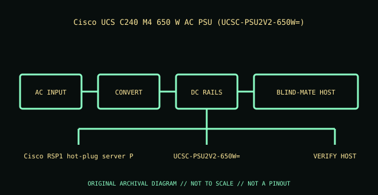

[ POWER CONVERSION // IDENTIFIED MODEL ]
Cisco UCS C240 M4 650 W AC PSU (UCSC-PSU2V2-650W=)
Exact module identity: Cisco UCSC-PSU2V2-650W=. This record applies only to this manufacturer option/PID; nominal wattage or a similar shell does not prove cross-model compatibility.

HIGH-VOLTAGE WARNING: Disconnect mains before external inspection. Never open a PSU. Internal capacitors may retain lethal charge after unplugging. Do not probe or repair its interior; use qualified service or replace the unit.
Model-specific ratings & fit
| Manufacturer identity / exact module | Cisco UCSC-PSU2V2-650W= — Cisco UCS C240 M4 650 W AC PSU (UCSC-PSU2V2-650W=) |
|---|---|
| Rated output / rail information | 650 W; +12 VDC main output; +3.3 VDC standby. Main rail is approximately 54 A at the 650 W class (derived ceiling; obey actual output table). |
| AC input | 90–132 V AC or 180–264 V AC operating range; 47–63 Hz (nominal 100–120 / 200–240 V AC). |
| Efficiency | 80 PLUS Platinum certified |
| Form factor / mounting | Cisco RSP1 hot-plug server PSU module. |
| Connectors / backplane | IEC 60320 C14 AC inlet; Cisco proprietary blind-mate connection to the UCS C240 M4 power distribution/backplane. |
| System compatibility | Cisco UCS C240 M4 only where the system configuration lists PID UCSC-PSU2V2-650W=; use matched supported supplies and confirm power-budget/redundancy requirements. Not interchangeable with the C220 M5 1050 W PSU in this archive. |
| Redundancy / cooling | Hot-swap only under Cisco’s supported redundant configuration and removal procedure; the chassis fans/power subsystem provide directed cooling. |
| Revision distinctions | The trailing equals sign is part of Cisco’s configurable PID. Verify PID and revision on label; 650 W output is per supply, not a generic 650 W server connector standard. |
Compatibility & safe installation
- Confirm full manufacturer part/PID, revision and label against the host’s exact system QuickSpecs, service manual and power-supply matrix.
- Check input voltage, rail limits, connector/backplane keying, bay dimensions, supported efficiency class and cooling direction before installation.
- Hot-plug is conditional: verify healthy remaining supply capacity, supported redundancy state and the host service procedure before removing a live module.
- Do not mix modules or use modular leads across models unless the system manufacturer explicitly approves that combination.
- Never open or probe a PSU. Retire damaged, wet, burnt, corroded, modified or unidentified units.
Revision & archival notes
The trailing equals sign is part of Cisco’s configurable PID. Verify PID and revision on label; 650 W output is per supply, not a generic 650 W server connector standard.
Archive a clear nameplate photograph, complete option/FRU number, hardware revision, AC inlet and connector labels, host model, and source-document revision. Distinguish manufacturer ratings from derived values.
Manufacturer references
- Cisco UCS C240 M4 Installation and Service Guide — technical specificationsManufacturer AC input, output rails, efficiency class and supported PSU type.
- Cisco UCS C240 M4 Installation and Service Guide — power supply installation and safetyHost-specific hot-plug procedure and supported 650 W / other supply options.
Manufacturer nameplate and applicable system manual take precedence over this summary.